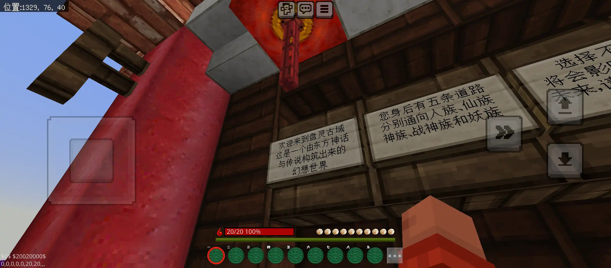
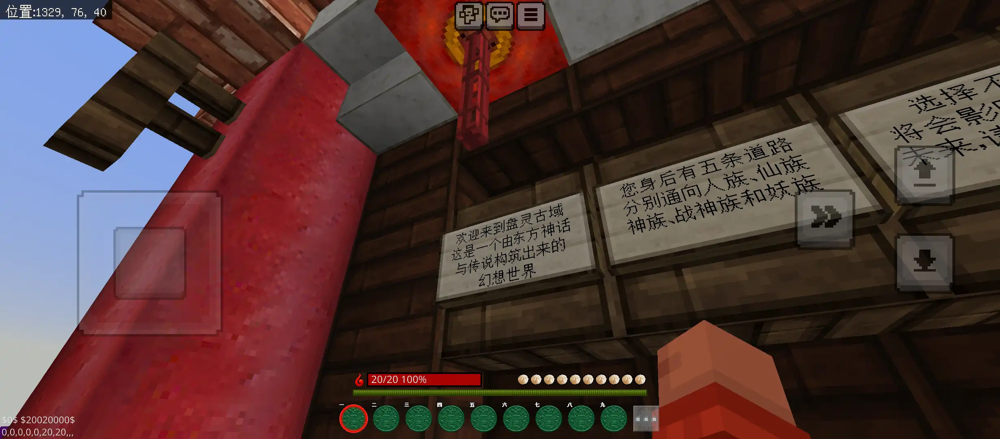
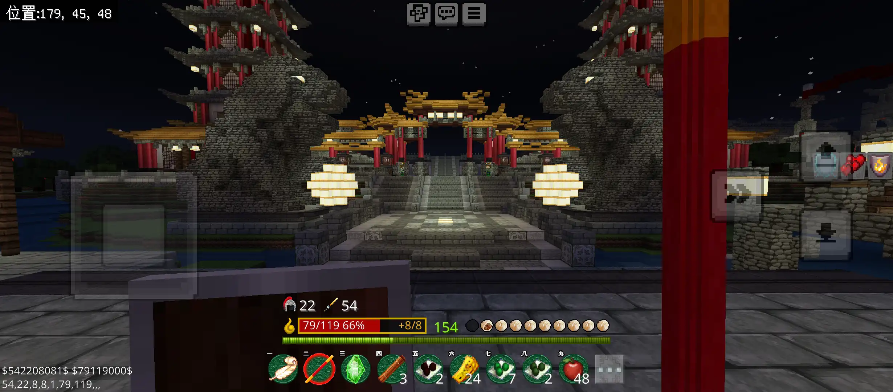
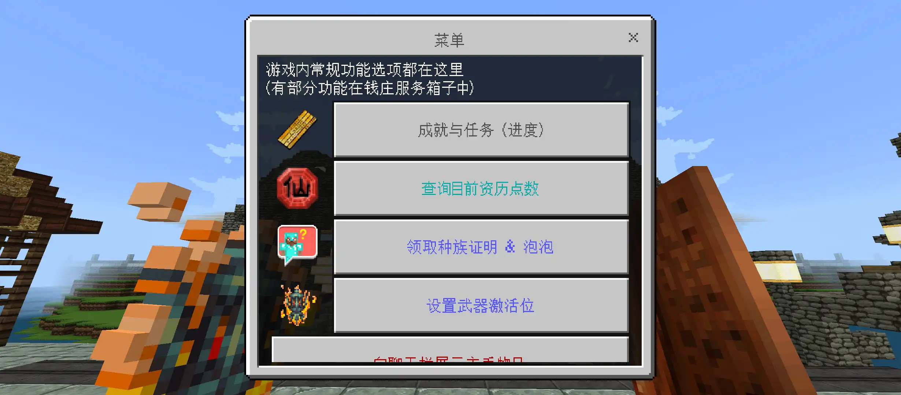
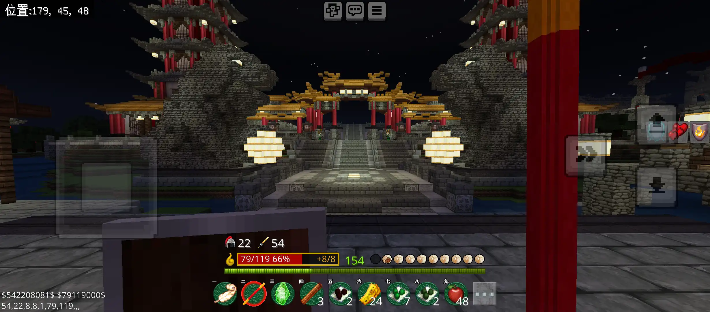
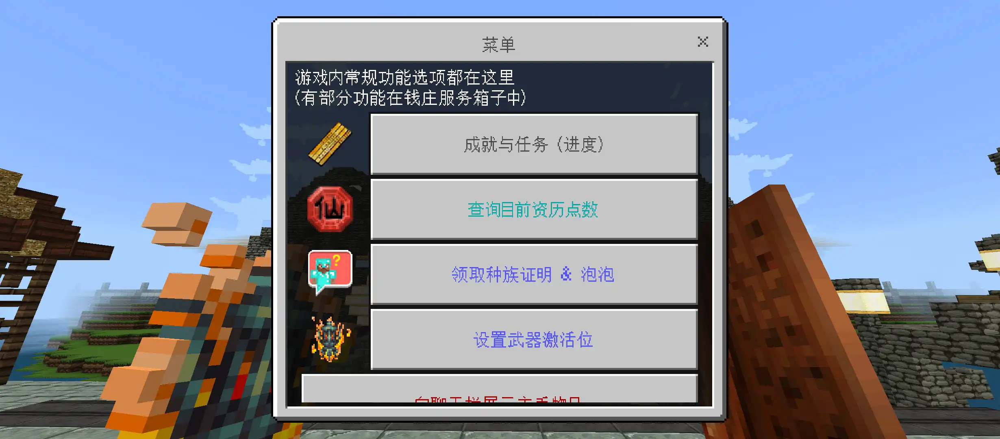

想在基岩版玩盘灵古域？那就来幻域无界互通服！基于间歇泉+高版本DLC（梦回盘灵），告别Java版启动器，告别复杂配置，享受原生系统支持的基岩版游戏体验！
2015年4月，史上最大东方玄幻RPG地图——盘灵古域发布于Java版，没有电脑的我们看着手机上的携带版，感到万分无奈。。。
时隔近九载，盘灵早已拥有了高版本DLC，支持1.20，GeyserMC（间歇泉）互通技术也在多年发展下让基岩版玩家越来越完美地登录Java版服务器并游玩，且实现了自定义物品/方块模型，在如此优越的条件下，通过从携带版发展而来的基岩版在盘古大陆冒险成为了可能。
如今，这一概念已经实现，无需下载专用客户端，就在最新基岩版，添加服务器即可游玩，基于间歇泉+梦回盘灵的互通服务器——幻域无界，正式和大家见面！

服务器从10月中旬开始调试，资源包移植、服务端部署及功能适配等历时近3个月，但为了让基岩版玩家拥有更好的游戏体验，我仍然会继续这些工作。 至于互通造成的Bug，多数已被修复，剩下的寒假期间也会逐渐修复，大家可以放心游玩！如果你发现了Bug，请通过群聊向我反馈，而不是梦回盘灵扩展包作者御龙九秋，他只解答或修复原版客户端/服务器造成的问题
所有服务器的相关教程，及已知问题都在这里可以找到：游玩指南及注意事项
 


 




服务器Java版入口使用WebAuth登录插件，如需使用Java版游玩请先点击下方按钮注册/登录：
使用Java版登录服务器注：基岩版玩家无论是否有绑定Java版账户，都无需在此登录。